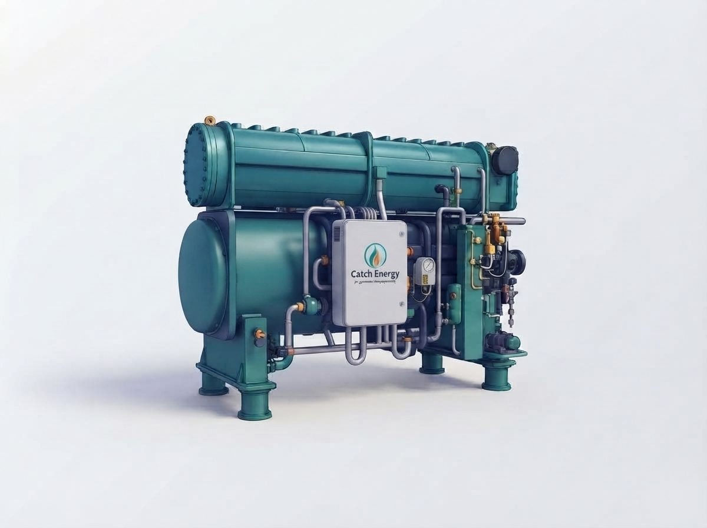
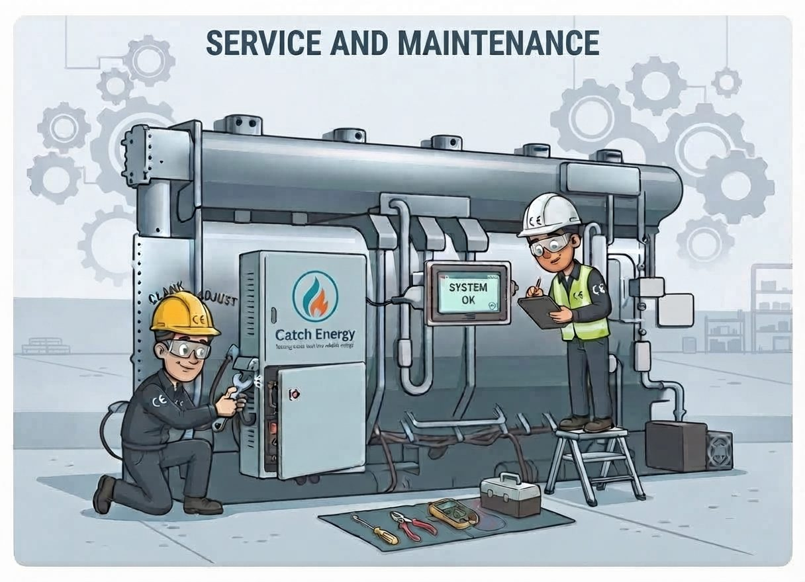
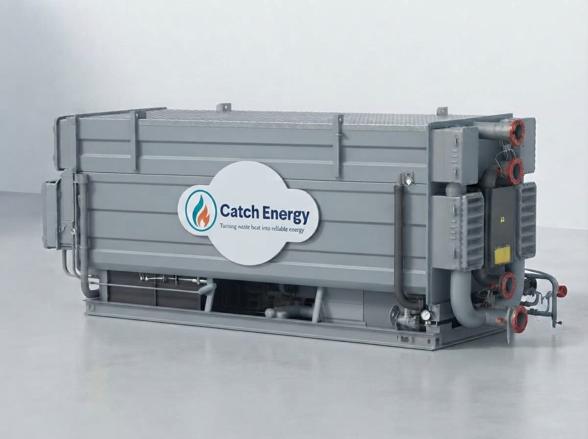

Keeping mission-critical absorption cooling running.
Independent, OEM-trained engineers for absorption chiller service, maintenance and commissioning — plus heat recovery engineering that turns wasted heat into reliable energy.

Specialist service, not a general HVAC contractor.
Absorption machines run under deep vacuum and depend on precise LiBr chemistry. We work on them every day — so problems get found before they stop your plant.
Absorption Chiller Service & Maintenance
Planned maintenance contracts, LiBr analysis, vacuum and leak testing, tube cleaning, performance verification and controls care — tailored to your machine, duty and site. The core of what we do.
Explore chiller service24/7 Emergency Breakdown
Lost cooling can't wait. Rapid diagnosis, temporary measures and permanent repair by engineers who know these machines.
Call us outCommissioning & Re-commissioning
New installs and major overhauls brought safely online, with performance verified against design data and full documentation.
Learn moreLiBr Analysis & Vacuum Integrity
Solution chemistry, inhibitor and alkalinity control, crystallisation risk, 24-hour decay testing and purge optimisation.
Learn moreHeat Recovery Engineering
Feasibility, temperature matching and integration — absorption chillers and heat pumps that turn waste heat into cooling or useful heat.
Explore solutions
The people who look after the machine, not sell you a new one.
General refrigeration engineers rarely carry the tools or the experience for vacuum-critical LiBr plant. We're independent and brand-agnostic — our only job is keeping your existing asset at design performance for as long as possible.
- Single & double-effect machines — hot water, steam or exhaust driven
- Independent advice — repair vs replace, honestly
- Performance audits & life-extension planning
A clear path from first call to reliable running.
Assess
Site visit or remote review of your machine, duty, history and symptoms.
Diagnose
Vacuum test, LiBr analysis and performance data pinpoint the real issue.
Restore
Repair, recover vacuum, correct chemistry and verify against design.
Protect
Planned maintenance and monitoring keep it running for decades.
Where cooling and heat can never fail.
Mission-critical experience across the UK and mainland Europe.
Data Centres
Absorption cooling that lowers PUE and frees electrical capacity for IT load.
Hospitals
Reliable, quiet cooling for theatres, imaging and wards — planned around clinical operations.
District Heating
Absorption heat pumps for flue-gas recovery and network temperature lift.
Trigeneration & CHP
Turn summer engine heat into chilled water and keep CHP fully utilised.
Pharmaceutical
Validated environments with the documentation and traceability they demand.
Manufacturing
Process cooling where downtime is measured in lost output.
Not sure what your waste heat can produce?
Tell us the heat source you have and our Solutions Explorer shows what you can make — chilled water, heating, steam or power — and the technology that fits.
Engineering knowledge, explained properly.
Field-tested guidance on absorption chillers, heat pumps and heat recovery — written by the people who service them.
How absorption chillers work — the complete guide
The single and double-effect LiBr cycle, why the vacuum matters, and how these machines last decades.
Read article
Absorption cooling in data centres
Turning server and generation heat into cooling — lowering PUE and grid demand.
Read articleAbsorption heat pumps in district heating
Flue-gas condensing recovery, lower return temperatures and the efficiency multiplier.
Read articleAbsorption chillers & heat recovery — answered.
What is an absorption chiller and how does it work?
Who services absorption chillers in the UK?
What's the difference between an absorption chiller and an absorption heat pump?
How often should an absorption chiller be serviced?
Why choose absorption cooling for a data centre?
Have an absorption chiller? Let's keep it running.
Planned maintenance, an urgent breakdown, or a heat recovery idea — tell us your site and we'll respond with a clear, engineer-written answer, usually within one working day.
Talk to an engineer, not a call centre.
We reply within one working day. For emergencies, call the 24/7 line.